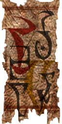

| Tel Fyr |
| Alignment: Telvanni |
| Region: Azura's Coast |
|
Transport:
Almsivi Intervention:
Divine Intervention:
|
Services:
|
|  |
Tel Aruhn |
Tel Aruhn is the home of the Telvanni Archmagister, Lord Gothren. It is located on a small island in Zafirbel Bay, to the west of the Telvanni capital of Sadrith Mora. It was constructed in the middle Merethic Era by Aldmeri explorers.
Tel Aruhn itself is a relatively small community, with a variety of interesting services in the wizard tower, and more commonplace supply stores in the houses surrounding it (for those who cannot levitate). While Tel Aruhn is a quiet, scenic place to relax, aside from magical goods, there is little to recommend the island to any serious adventurer. A place to provision, or recover for adventuring in the region, some find it a good base, more intimate than Sadrith Mora.
Inside the tower is an apothecary and an alchemist. Barusi Venim the enchanter and Felara Andrethi the healer are in the living quarters. The Telvanni Archmagister Gothren is attended by his two dremora guards, located beyond the main levitation shaft.
The Plot and Plaster is a good pub in the town, however its owner, Drarayne Girith, is having bad dreams. Maren Uvaren is an enchantress in her home, and the stores of a trader, an apothecary and a smith are surrounding the wizard tower. The crafty Savile Imayn is a slave trader at the slave market near the entrance to the Underground.
Gothren is the stalling Master Wizard you'll have to visit to become Telvanni Hortator or to replace him as the new Archmagister.